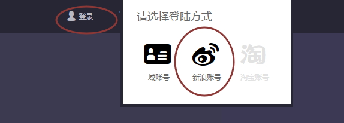
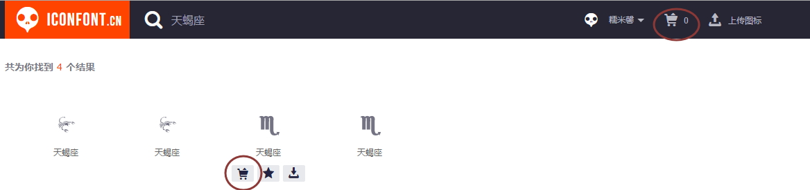
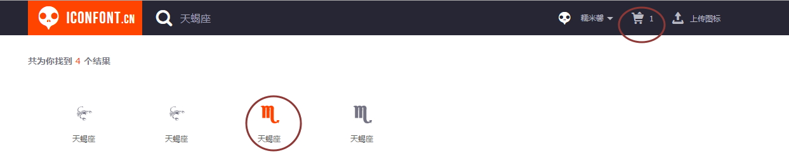
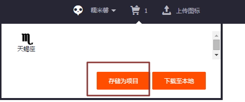
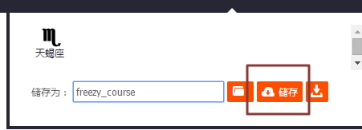
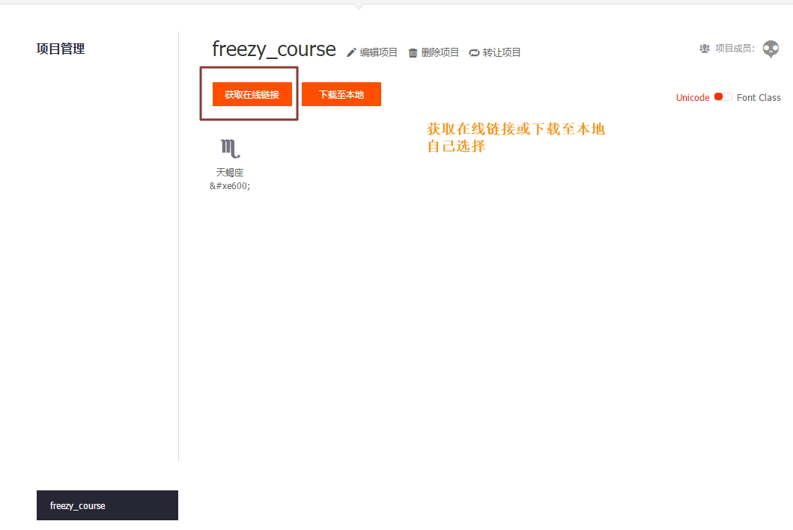
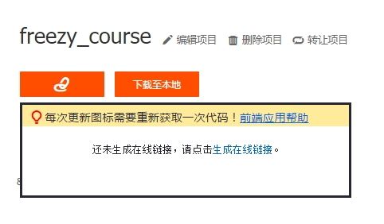
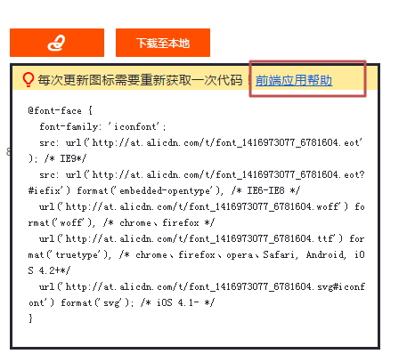
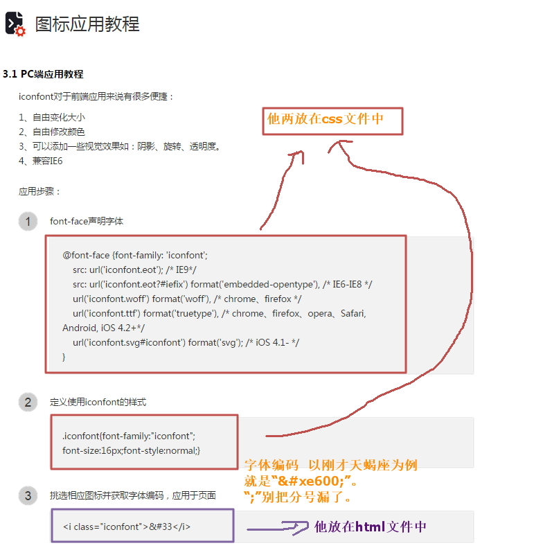

Setp 1：进入阿里巴巴矢量图标库官网用新浪账号登陆

Setp 2：搜索想要的图标
Setp 3：鼠标移至需要的图标上，会出现如下图的三个小图标，选择长得像购物车的那个

Setp 4：右上角像购物车的图标中就有个图标静静的躺着了

Setp 5：将他存储为项目名命名


Setp 6：随后会自导跳转到项目管理，选择需要的项目

Setp 7：此时可以选择在线或下载至本地，以在线为例，点击“生成在线链接”


Setp 8：到最后 就是这么三块

好吧 这教程图有点多 但本教程收工！看完点我返回